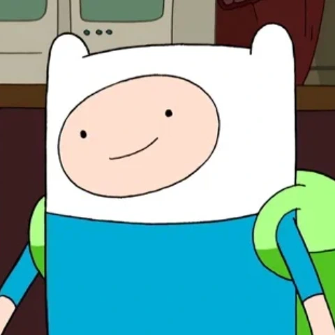
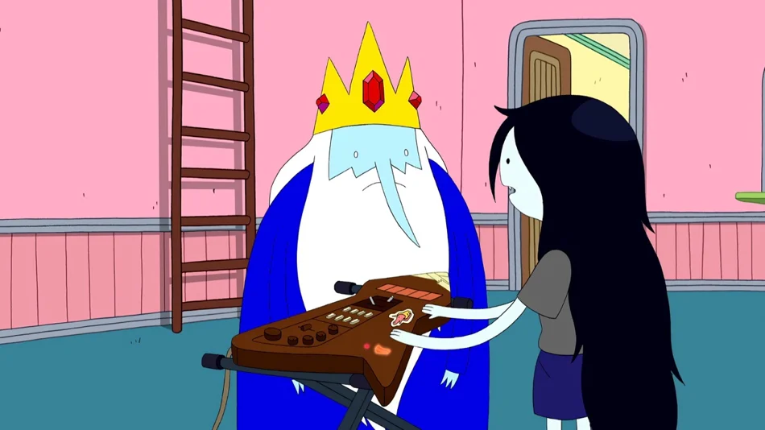
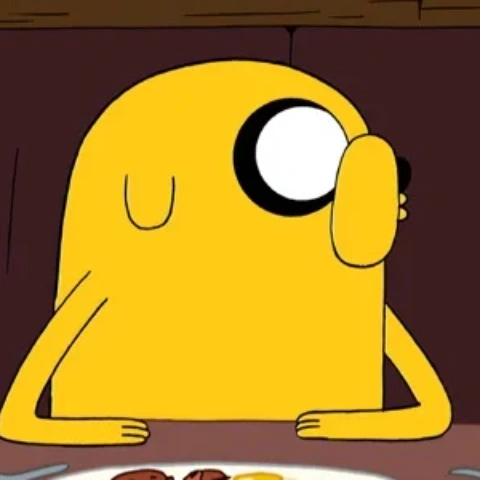
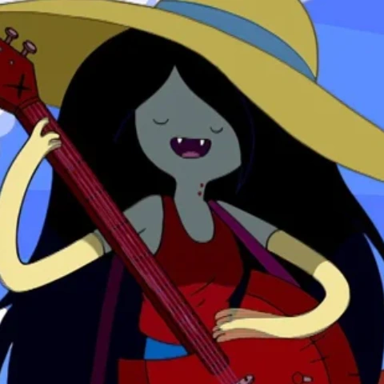
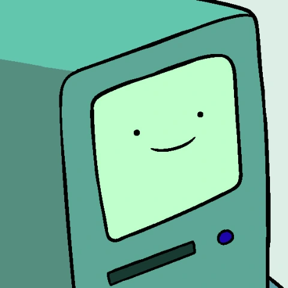
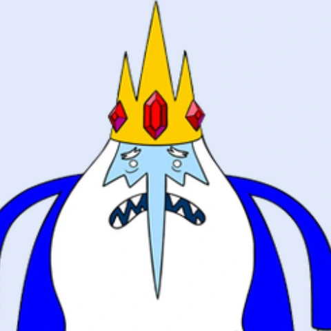
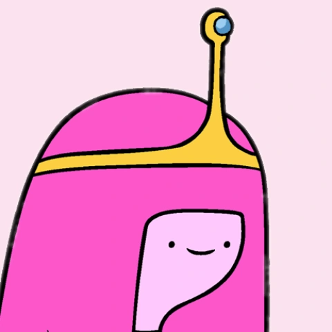

Finn
Entra de cabeça nas aventuras e aprende a mudar de estratégia.
Uma visita à Terra de Ooo para revisitar histórias que me acompanharam enquanto eu crescia e conversar sobre memória, emoções e mudanças.


Uma música, uma amizade ou uma cena que ganha outro sentido quando a gente cresce. Revisito momentos da série e uso essas histórias para levantar perguntas sobre o que sentimos e lembramos.
Comecei a assistir a Hora de Aventura por volta dos dez anos, no Cartoon Network. Era diversão e, com o tempo, virou também uma fonte de conforto. Hoje, ao voltar a esses episódios, percebo detalhes que me fazem pensar nas minhas experiências pessoais relacionadas a mudanças e relacionamentos.
Vire duas cartas de cada vez e encontre os seis pares de personagens. Repare em como você se lembra da posição das cartas à medida que joga.
Demonstração local com personagens: tentativas e pares não são salvos nem enviados ao banco. Não é um teste científico de memória.

Entra de cabeça nas aventuras e aprende a mudar de estratégia.

Companheiro de Finn, capaz de mudar de forma e de ritmo.

Usa a música para expressar o que ficou guardado.

Transforma situações do dia a dia em histórias e brincadeiras.

Sua história com Marceline abre uma conversa sobre lembranças e vínculos.

Cientista e governante do Reino Doce, resolve problemas inventando soluções.